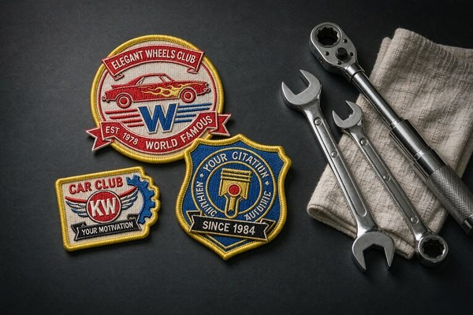
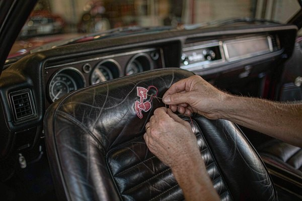

Automotive Patches: Car Club Culture and Identity
A car club lives or dies by its identity, and nowhere is that identity more visible than on the back of a member's jacket. Automotive patches — club crests, rockers, piston emblems and event marks — carry the same weight in car culture that colors carry in aviation or crests carry in schools. This guide walks through the culture's patch vocabulary, what a full club set contains, material choices that survive outdoor meets, placement conventions, and how multi-chapter clubs order without losing their minds.
Where Car Club Patches Come From
Car clubs organized almost as soon as cars did. The hot rod culture of post-war California built the template still used today: a named club, a crest, a jacket, and rules about who earns the right to wear it. Borrowing visually from military squadrons and motorcycle clubs, early car clubs adopted large back patches and curved rocker banners, and the format stuck because it solves a real problem — at a car show packed with strangers, a jacket reads from twenty feet away while a business card does not.
The etiquette matters as much as the look. In most clubs the back set is earned, not bought: prospects wear partial marks, full members wear the complete set, and wearing a club's colors without membership starts arguments rather than conversations. Event and support patches, by contrast, are made to change hands — they are the friendly layer of the culture, traded at meets and sewn onto sleeves as a record of where the owner has been.
Anatomy of a Full Club Set
A complete car club patch layout is a composition, not a collection. The standard vocabulary:
- Back crest. The club's main identity — typically 10 to 12 inches, centered on the jacket back. Shapes run from circles and shields to custom silhouettes of the club's signature car; the shape options and their production trade-offs are compared in our die-cut shapes guide.
- Top rocker. A curved banner above the crest, usually carrying the club name. Curved shapes need clean die-cut edges to sit flush against the crest's arc.
- Bottom rocker. The mirror banner below, most often carrying the city or region — the piece that changes when a club opens a new chapter.
- Front marks. 2 to 3 inch chest and sleeve patches: membership crests, officer roles, meeting years, memorial marks for departed members.
- Swap and support patches. Simplified 2 to 3 inch designs made for trading at meets, often with hook-and-loop backing so they move between jackets.
Because the pieces must align as one composition, order the whole set from one digitized layout rather than letting each piece drift — misaligned rockers are the most common flaw in amateur club jackets.
Materials That Survive Meets, Rain and Garages
Car culture happens outdoors, next to engines, in weather. Material choice is therefore practical, not just aesthetic:
| Material | Best For | Watch Out For |
|---|---|---|
| Embroidered | Classic club sets on denim, canvas and leather — the traditional look with real depth | Thread color fade after years of hard sun; polyester thread resists it far better than rayon |
| PVC / rubber | All-weather gear, work jackets and event patches — waterproof and wipe-clean | Less traditional texture; the durability logic is in our PVC durability guide |
| Woven | Small text-heavy marks — chapter bars with long names stitch cleaner than embroidery | Less dimensional; pairs best as part of a mixed set |
Thread choice carries the color-matching burden across the whole set — which threads hold up in sun and wash is exactly the subject of our thread types guide. Clubs ordering both a dress jacket set and a workwear set should match them from the same Pantone references so the brand never drifts between versions.
Placement Conventions
Placement in club culture is codified to the inch, and breaking it reads as disrespect rather than creativity:
| Item | Standard Position | Typical Size |
|---|---|---|
| Club crest | Centered on jacket back, mid-panel | 10–12 in |
| Top / bottom rockers | Curved above and below the crest, flush | 8–10 in wide |
| Membership mark | Left or right chest, per club rules | 2–3 in |
| Officer / role marks | Chest or sleeve, below membership mark | 2–2.5 in |
| Event and swap patches | Sleeves, lower front panels | 2–3 in |
| Interior accents | Seat headrests, door cards, tool rolls | 1.5–2.5 in |
Measure the jacket's back panel flat before finalizing crest size — a 12 inch set overwhelms a slim cut. Interior patches have become a quiet trend: a small crest stitched to a headrest or tool roll marks the car itself as a member, and those follow the same sew-on discipline as any leather piece.

Meets, Trading and the Event Layer
Car shows and club meets run on the swap economy. Clubs commission limited event patches for a specific show or anniversary, trade them with allied clubs, and treat the sleeve of a well-traveled jacket as a career record. The design language that makes these pieces collectible — a single strong symbol, the event name, the year — is the same one covered in our event patches guide, and limited runs with numbered edges reliably become the most-traded pieces of a season.
Support patches deserve a deliberate policy: decide which clubs your club exchanges with, keep the design simplified, and order them loose. Because there is no minimum order, a club can print a new swap design for every major meet without carrying inventory risk.
Ordering for Clubs and Chapters
Car clubs grow by chapters, and the ordering structure should mirror that growth:
- Digitize the crest once. The master layout serves every chapter and every future reorder; only the city rocker changes between chapters.
- Order full sets for founding members, rockers for new chapters. The bottom rocker is the only true per-chapter piece — everything else is shared stock.
- Plan around the season. Club patches spike before show season and anniversaries; order six to eight weeks ahead of the first big meet.
New chapters can be as small as five members, and no-minimum production means their sets cost setup only once. The planning discipline — who gets what variant, in what wave — follows the same playbook as any staff uniform program.

Frequently Asked Questions (FAQ)
Q1: What sizes does a full car club patch set need?
The classic set is a 10 to 12 inch back crest, top and bottom rockers at 8 to 10 inches wide, and 2 to 3 inch chest or sleeve marks. Confirm the exact jacket measurements before ordering, since back-panel space varies between cuts.
Q2: Embroidered or PVC patches for car club jackets?
Embroidered for the traditional look on denim, canvas and leather jackets. PVC for all-weather club gear — it is waterproof, survives rain and sun without fading, and wipes clean after a muddy meet. Many clubs run embroidered back sets plus PVC event patches.
Q3: Where do car club patches go on the jacket?
The club crest goes centered on the back, rockers above and below it, membership and role marks on the chest, and personal or event patches on the sleeves. Keep the back set centered as one composition — measure the panel first and lay the full set out flat before sewing.
Q4: How do we order patches for multiple chapters?
Digitize one master crest, then add each chapter name as a small rocker or bar order against that file. There is no minimum order, so a new five-member chapter can order exactly its own set without paying setup twice, and every chapter matches the founding club.
Q5: What are support or swap patches?
Smaller patches made for trading at meets and showing appreciation to allied clubs. They carry simplified artwork at 2 to 3 inches, often with hook-and-loop backing, and are ordered in loose quantities since they change hands freely at events.
Conclusion: Wear the Club
Car club patches are the uniform of a culture that built itself — earned, traded, and worn with more rule-keeping than most corporate dress codes. Get the anatomy right, choose materials that survive the weather the club actually meets in, place the set as one composition, and let chapters grow from a single digitized master. Do that, and the jacket does what every club jacket has done since the hot rod era: announces who you ride with before the engine starts.
Send us your club crest or a photo of your current set, and we will rebuild the full layout vector-clean — crest, rockers, chest marks — match thread colors, and return a proof within 12 hours. No minimum order, from a five-member chapter to a national club. Request a free quote and get the colors on the jacket.